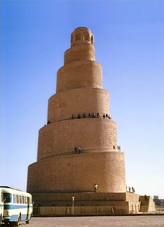

概要
La grande mosquée de Samarra, ou mosquée al-Mutawakkil est une des plus importantes œuvres architecturales de l'Islam. Elle fut la plus grande mosquée de la civilisation islamique pendant des siècles dans l'éphémère capitale des califes abbassides à Samarra durant le IXe siècle et demeure un joyau de l'art abbasside. Son minaret en spirale hélicoïdale (Malwiya) en fait aussi un exemple unique, inscrit ainsi que l'ensemble de la vieille ville arabe au patrimoine mondial de l'UNESCO.
جامع الملوية في سامراء من مساجد العراق الأثرية القديمة، وهو المسجد الجامع الذي بناه الخليفة العباسي المتوكل على الله بن الخليفة المعتصم بالله، بين عامي 234 - 237هـ/ 848 - 851م، على أرض مستطيلة مساحتها 27920 متراً مربعاً وبطول 240 متراً وبعرض 158 متراً، ويسع المصلى الواسع لأكثر من ثمانون ألف مصلِّ، وشيد الجامع بمادة الطابوق والجص، وفرشت أرضيته كلها بطابوق مربع صف بدقة وإتقان، وجدران الجامع ضخمة ومتميزة بارتفاعها البالغ 11 متراً، وسمكها البالغ 2.7 متراً، بإستثناء الأبراج، وهذه الجدران مدعمة بأبراج نصف إسطوانية تجلس على قواعد مستطيلة عدا أبراج الأركان فهي شبه مستديرة، حيث يبلغ قطرها خمسة أمتار، ومجموع أبراج الجامع 44 برجاً، وللجامع 15 باباً للدخول إليه، وترتفع الأبواب حوالي ستة أمتار عن مستوى سطح الأرض للجامع وتتوجها نوافذ ذات عقود مدببة.
The Great Mosque of Samarra or Al-Malwiya Mosque is a former congregational mosque, now in partial ruins, in Samarra, in the Saladin Governorate of Iraq. The mosque was commissioned in 848 CE and completed in 851 by the Abbasid caliph Al-Mutawakkil. At the time of construction it was the world's largest mosque. It is known for its 52-metre-high (171 ft) minaret encircled by a spiral ramp. The former mosque is within the 15,058-hectare (37,210-acre) Samarra Archaeological City UNESCO World Heritage Site, listed in 2007.
Samarra Ulu Camisi veya Mütevekkiliye Camisi, Irak'ın Samarra şehrinde Abbasi halifesi Mütevekkil tarafından 848 ile 852 seneleri arasında yaptırılmış ordugâh tipi camidir.
Masjid Agung Samarra adalah masjid yang terletak di kota Samarra, Irak, dan dibangun pada abad ke-9. Masjid ini diperintahkan untuk dibangun pada tahun 848 dan konstruksinya selesai tahun 852. Masjid ini dibangun oleh khalif Bani Abbasiyah, Al-Mutawakkil, yang berkuasa dari tahun 847 sampai tahun 861.
La Gran Mezquita de Samarra es una mezquita aljama del siglo IX situada en Samarra, Irak. Fue encargada en 848 y se completó en 851 durante el gobierno del califa abasí Al-Mutawakkil, quien reinó en Samarra desde 847 hasta 861. Se ubica dentro de las 15,058 hectáreas de la '«Ciudad arqueológica de Samarra» inscrita en la lista de Patrimonio de la Humanidad en peligro por la UNESCO en 2007.
La Grande Moschea di Samarra era una moschea del IX secolo di Samarra, in Iraq, all'epoca capitale del califfato abbaside. La moschea era stata commissionata nell'848 e completata nell'851 dal califfo abbaside al-Mutawakkil che regnò dall'847 fino all'861.
A Grande Mesquita de Samarra é uma mesquita do século IX localizada em Samarra, no Iraque. A mesquita foi comissionada em 848 e completada em 851 pelo califa abássida Almotauaquil (r. 847–861) que reinou em Samarra.
De Grote moskee van Samarra of de Grote moskee van al-Mutawakkil was een moskee in de Iraakse stad Samarra.
薩邁拉大清真寺位於伊拉克薩邁拉，由阿拔斯王朝哈里發穆塔瓦基勒於848年命人興建，於852年完成。穆塔瓦基勒於847年至861年統治薩邁拉。
サーマッラーの大モスク は、イラクのサーマッラーにあるモスク。アッバース朝の10代目カリフであるムタワッキルによって建設された。1278年にフレグ率いるモンゴル軍に破壊され外壁とミナレットを残すのみとなったが、今日に残る世界中のモスクで最も大きな面積を持つ。また、このモスクは2007年に国際連合教育科学文化機関によって世界遺産に登録された「都市遺跡サーマッラー」に含まれている。ムタワッキルのモスクとも呼ばれる。
सामर्रा के महान मस्जिद; इराक के सामर्रा शहर में स्थित नौवीं सदी की मस्जिद है। मस्जिद का निर्माण अब्बासी खलीफा मुतावक्किल ने 851 ईस्वी कराया था खलीफा मुतावक्किल ने 847 से 861 ईस्वी तक सामर्रा में शासन किया था।
Большая мечеть в Самарре — мечеть в городе Самарра, бывшей столице халифата Аббасидов, которые и выстроили это огромное сооружение в 849—852 годах. На тот момент это была самая крупная постройка исламского мира.
Nhà thờ Hồi giáo lớn Samarra là một nhà thờ Hồi giáo được xây dựng vào thế kỷ 9, nằm bên dòng sông Tigris ở Samarra, một thành phố nằm về phía bắc Baghdad, Iraq. Công trình được xây dựng vào năm 848 và hoàn thành năm 851 dưới triều đại của khalip nhà Abbas là Al-Mutawakkil, người đã trị vì ở Samarra từ 847 đến 861.
มัสยิดใหญ่แห่งซามัรรออ์ หรือที่รู้จักในชื่อ มัสยิดอัลมัลวียะฮ์ เป็นอดีตมัสยิดประจำชุมชนในเมืองซามัรรออ์ ประเทศอิรัก สร้างขึ้นในสมัยราชวงศ์อับบาซียะฮ์ตามพระบัญชาของเคาะลีฟะฮ์อัล-มุตะวักกิลในช่วงกลางคริสต์ศตวรรษที่ 9
Marea Moschee din Samarra este o moschee din Samarra, Irak. Ea a fost construită în secolulu al IX-lea, de către califul abbasid Al-Mutawakkil. La vremea ei, moscheea era cea mai mare din lume.
地図上の位置
資料とリンク
- Wikipédia — Français
- Wikipédia — العربية
- Wikipédia — English
- Wikipédia — Türkçe
- Wikipédia — Bahasa Indonesia
- Wikipédia — اردو
- Wikipédia — Español
- Wikipédia — Italiano
- Wikipédia — Português
- Wikipédia — Nederlands
- Wikipédia — 中文
- Wikipédia — 日本語
- Wikipédia — हिन्दी
- Wikipédia — Русский
- Wikipédia — Tiếng Việt
- Wikipédia — ไทย
- Wikipédia — Română
- Wikidata — Q593115
データ：ウィキデータ（CC0）、3か月ごとに更新。年は、その建物について知られている最も古い建設年です。のちにモスクになった建物（アヤソフィアなど）の場合は、元の建物の建設年です。写真：ウィキメディア・コモンズ。作者とライセンスは各写真のページにあります。